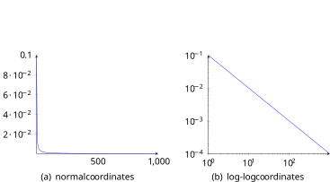

11 Text and Human Language
The big print giveth, and the fine print taketh away.
Fulton J. Sheen
Text has been the primary form of documentation in human history. Today large volumes of unstructured text data are being generated and disseminated at an unprecedented pace, via such media as tweets, emails, and scholarly publications. The magnitude of these data has far exceeded our human capacity to read and digest. How can we possibly sift through the world of written text and access what we need? In what ways can computers, which have helped create this ever-growing pile of data, be harnessed to also help us discover relevance and meaning?
11.1 Text Vectorization
Let’s start with some basic issues and ideas for processing text.
Imagine having a long legal document, it can be stored digitally along with other documents and files. In its raw text format, you can hardly use the document to compute and compare – for example, to find other documents related to the same or similar cases – unless we can convert the text into some numbers to be used in the calculation.
Indeed, the first step of text processing involves a general process called vectorization, which identifies elements in the text and assigns numbers (weights) to them as its numerical representation. The result of this is a list of values, which can then be used for searching, ranking, and association.
11.1.1 Tokenization
Through tokenization, the text can be split into basic elements (tokens) such as paragraphs, sentences, phrases, and/or words. Taking single words as basic elements, the following text:
John is quicker than Mary.
can be split into individual tokens John, is, quicker, than, and Mary. In a simple classic approach, we only try to capture what tokens (keywords) occur in the text and pay no heed to the order in which they appear. This is referred to as the bag of words model, which will lead to some loss of information. Apparently, with this treatment, tokenization of the above text will result in the identical bag of words with the following:
Mary is quicker than John.
where the only difference is the order and the meaning is simply the opposite. Indeed, for analyses where the semantic interpretation of a text is critical, the model will suffer from the loss of order. In many practical applications, nonetheless, the bag of words works sufficiently well where the central problem is about finding associations through the keywords. For now, we stick with this basic model and revisit the issue of word order later.
Now that we identify the tokens (words), one may consider normalize them so that the same word types in various forms can be unified and treated as the same. In English, one can apply normalization techniques such as:
Case folding, which changes all tokens into lower-case, e.g. John and JOHN \(\to\) john;
Stemming, which reduces tokens to their roots, e.g. compression and compressed \(\to\) compress;
Lemmatization, which converts word variants to their base form, e.g. are and is \(\to\) be;
These techniques are language and domain-dependent. Aside from potential benefits of unifying tokens of the same type, token normalization may also lead to undesired consequences, e.g. to treat CAT (the company) and cat as the same. So careful examination of data and application is necessary to determine whether related normalization techniques may be instrumental or detrimental.
Also, note that tokens are not limited to single words. One can use a moving window to take two, three, or more consecutive words at a time to identify all possible phrases or n-grams. Likewise, you can use a moving window to identify any \(n\) consecutive characters as tokens. Character n-grams have shown its utility in applications such as spam detection, where junk emails may pad normal keywords with special characters to avoid being identified.
11.1.2 Term Weighting
Once tokens – single words or phrases – have been identified, they can be sorted and merged into a set of unique tokens, which we refer to as the dictionary. Suppose we have a book collection of The Chronicles of Narnia, for which we only store their titles1:
The Lion, the Witch and the Wardrobe
The Voyage of the Dawn Treader
The Horse and His Boy
Based on tokenization of single words with case-folding, the following dictionary (alphabetically ordered) can be identified from this small collection:
| 1 | 2 | 3 | 4 | 5 | 6 | 7 | 8 | 9 | 10 | 11 | |
|---|---|---|---|---|---|---|---|---|---|---|---|
| and | boy | dawn | his | horse | lion | the | treader | voyage | wardrobe | witch |
Now we can use terms in this dictionary to represent each document based on their occurrences, \(0\) if one does not occur and \(1\) if it does. The following matrix shows such a binary representation:
| 1 | 2 | 3 | 4 | 5 | 6 | 7 | 8 | 9 | 10 | 11 | |
|---|---|---|---|---|---|---|---|---|---|---|---|
| DOC | and | boy | dawn | his | horse | lion | the | treader | voyage | wardrobe | witch |
| 1 | 1 | 0 | 0 | 0 | 0 | 1 | 1 | 0 | 0 | 1 | 1 |
| 2 | 0 | 0 | 1 | 0 | 0 | 1 | 1 | 1 | 1 | 0 | 0 |
| 3 | 1 | 1 | 0 | 1 | 1 | 0 | 1 | 0 | 0 | 0 | 0 |
The size of the dictionary will increase with the size of the text collection and the length of each document. However, one can imagine that, for each document, not all dictionary terms will occur and therefore some (many in fact) of vector values are \(0\)s. A more efficient representation is a sparse vector, where only non-zero values (\(1\) in the binary case here) are retained. For example, document \(3\) in the above matrix can be represented as:
| ( | 1 | 2 | 4 | 5 | 7 | ) |
|---|---|---|---|---|---|---|
| and | boy | his | horse | the |
which only includes terms that appear in the document and have \(1\) values.
The binary representation only whether or not a term occurs. This is a reasonable treatment for small text documents such as the above example and tweets. With longer text documents, when full-text is used for vectorization, it is useful to also consider term frequency (TF).
\(TF_{dt}\) is the number of times a term \(t\) appears in document \(d\). It is often observed that a term with a higher term frequency in a document is more relevant to the document’s topical theme and should, therefore, be given a higher weight. One can simply use the term frequency as term weight:
\[\begin{aligned} w_{dt} & = & TF_{dt} \end{aligned}\]
One can also normalize the TF value with logarithm:
\[\begin{aligned} w_{dt} & = & \begin{cases} 1 + \log TF_{dt}, & \text{if}\ TF_{dt}>0 \\ 0, & \text{otherwise} \end{cases} \end{aligned}\]
A basic assumption of counting occurrences in the term frequency weight is that all occurrences are equal and should count equally. In light of the Zipf law, however, we know words are used unequally.
Some words appear more frequently simply because of the effect of least effort. Some are stop-words like a and the that contribute little in meaning. For many of these, there is one thing in common – they appear frequently not only in the current document but also in other documents as well.
In general, we observe that some terms are used so broadly in so many documents that they can hardly help differentiate one document from another. They are too broad to be specific and informative.
On the other extreme, some terms are used in only a very few documents and they very clearly distinguish these documents from others. These terms are rarer, more specific, and should be given more weight according to the observation here.
Imagine we randomly draw a document from the entire text collection, there is a probability that term \(t\) will appear, which can be estimated by:
\[\begin{aligned} p(t|C) & = & \frac{n_t}{N} \\ p(t'|C) & = & 1 - \frac{n_t}{N} \end{aligned}\]
where \(n_t\) is the number of documents containing term \(t\) and \(N\) is the total number of documents in the collection \(C\). \(p(t'|C)\) is the complimentary probability that \(t\) does NOT occur.
For a specific document \(d\) where term \(t\) appears, it is certain so the probability of observing the term is:
\[\begin{aligned} p(t|d) & = & 1 \\ p(t'|d) & = & 0 \end{aligned}\]
The amount of information gain or relative entropy, according to chapter [ch-info], by seeing the term in document \(d\) out of collection \(C\), can be computed by:
\[\begin{aligned} Info(t) & = & DL[P(t|d) || P(t|C)] \\ & = & - \sum_{x \in (t,t')} p(x|d) \log \frac{p(x|C)}{p(x|d)} \\ & = & - p(t|d) \log \frac{p(t|C)}{p(t|d)} - p(t'|d) \log \frac{p(t'|C)}{p(t'|d)} \\ & = & - 1 \cdot \log \frac{n_t}{N} - 0 \cdot \log \frac{p(t'|C)}{p(t'|d)} \\ & = & - \log \frac{n_t}{N} \end{aligned}\]
This information gain of term \(t\) is in fact the exactly the classic Inverse Document Frequency (IDF) weighting scheme:
\[\begin{aligned} IDF_t & = & Info(t) \\ & = & \frac{N}{n_t} \end{aligned}\]
where \(n_t\), the number of documents with term \(t\), is commonly referred to as document frequency (DF).
IDF measures how informative a term is when it appears in a document. For a term that appears in all documents in the collection – the stop-words for example – \(n_t\) is the same as \(N\) and its IDF weight becomes:
\[\begin{aligned} IDF_t & = & \log \frac{N}{N} \\ & = & \log 1 \\ & = & 0 \end{aligned}\]
For a term that appears in very few documents in a large collection, \(n_t << N\) and the IDF weight is great. In this way, the IDF weight penalizes broader terms used in many documents and rewards more selective, rare terms.
Please note that IDF is a collection-wide statistic for each term whereas term frequency (TF) is term statistic specific to a document. They address two separate aspects of term weighting and are often combined for document representation. The combined weighting scheme, namely the classic TF*IDF, assigns a term’s weight by:
\[\begin{aligned} w_{dt} & = & TF_{dt} \log \frac{N}{n_t} \end{aligned}\]
or with log-transformed TF weight:
\[\begin{aligned} w_{dt} & = & \begin{cases} (1 + \log TF_{dt}) \log \frac{N}{n_t} , & \text{if}\ TF_{dt}>0 \\ 0, & \text{otherwise} \end{cases} \end{aligned}\]
where \(TF_{dt}\) is the number of times term \(t\) occurs in document \(d\) (TF), \(n_t\) is the number of documents having \(t\) (DF), and \(N\) is the total number of document in the collection.
In certain applications, TF may be normalized by document length to alleviate potential favoritism toward longer documents. This is one of the most widely used term weighting methods in information retrieval and text mining.
11.2 Similarity Measures
Once each document is represented as a vector of terms with weights, we can conduct various operations, such as clustering and ranking, on them. The basic unit of these computational tasks is to measure how similar or dissimilar one document is to another.
A simple method to compute the similarity of any two documents \(d_u\) and \(d_v\) is by the dot product of their vector values:
\[\begin{aligned} Sim(d_u, d_v) & = & \sum_{t \in T}^{m} w_{ut} w_{vt} \end{aligned}\]
where for each term \(t\) in dictionary \(T\), \(w_{u,t}\) is the weight of \(t\) in document \(d_u\), and \(w_{v,t}\) is the weight of \(t\) in document \(d_v\). For example, the similarity of doc \(1\) and \(3\) given the binary matrix of Table [tab-text-binary] can be computed by:
\[\begin{aligned} Sim(d_1, d_3) & = & 1\times1 + 0\times1 + 0\times0 + ... + 1\times0 \\ & = & 2 \end{aligned}\]
The dot product coefficient in Equation [eq-text-dotp] can be used with any term weighting schemes including TF and TF*IDF. However, this similarity measure is not normalized by any size factor and its score can be inflated by document lengths and favor those longer documents. A remedy of this is the classic cosine similarity, which we will discuss in depth.
A binary sparse vector can also be regarded as a set, that is, a set including all unique terms that occur in the document. Several similarity coefficients can be computed based on sets. The Dice Coefficient computes the ratio between two sets’ intersection size and the mean of their sizes:
\[\begin{aligned} Dice(d_u, d_v) & = & \frac{|d_u \cap d_v|}{(|d_u| + |d_v|)/2} \\ & = & \frac{2|d_u \cap d_v|}{|d_u| + |d_v|} \end{aligned}\]
where \(|d_u|\) and \(|d_v|\) are cardinalities (sizes) of the two sets, and \(d_u \cap d_v\) is their interaction (the set of common terms).
A similar method, Jaccard Coefficient, measures the same intersection but as a fraction of the union of the two sets:
\[\begin{aligned} Jaccard(d_u, d_v) & = & \frac{|d_u \cap d_v|}{|d_u \cup d_v|} \end{aligned}\]
Beyond binary representation, document vectors can be treated as data points in a dimensional space where each term is an independent dimension (coordinate). To simplify the discussion and visualize the dimensional space, suppose we have only two terms in the dictionary, Data and Machine.2 Suppose we use TF term weighting and the following is a matrix representation of two documents where the terms appear:
| 1 | 2 | |
|---|---|---|
| DOC | Machine | Data |
| 1 | 1 | 5 |
| 2 | 4 | 1 |
These two documents can be plotted on the two-dimensional space, e.g. machine for the \(x\) dimension and data for the \(y\) dimension, shown in Figure 11.1:
With this dimensional representation, pair-wise similarity or difference can be measured by the geometric distance between two document data points. A classic metric of such is the Euclidean Distance, which measures the length of the straight line connecting the two data points in question, as shown in Figure 11.1. In an \(m\)-dimensional space, the general Euclidean Distance function is:
\[\begin{aligned} ED(u,v) & = & \sqrt{\sum_{i=1}^{m} (u_i - v_i)^2} \end{aligned}\]
where \(u_i\) and \(v_i\) are the \(i^{th}\) dimensional value of data points \(u\) and \(v\) respectively. Given documents \(d_1\) and \(d_2\) in Figure 11.1, their euclidean distance is:
\[\begin{aligned} ED(d_1,d_2) & = & \sqrt{(5-1)^2 + (1-4)^2} \\ & = & 5 \end{aligned}\]
While Euclidean Distance is widely used in text mining, its performance may suffer in applications where there is a wide distribution of document sizes. A thought experiment will help illustrate the problem.
Imagine we have two documents \(d_1 = (4,5)\) and \(d_2=(5,4)\) (with TF weights) that are highly similar and have a very small Euclidean distance between them, as show in Figure 11.2:
For now, one may think the line distance in Figure 11.2 is a reasonable estimate of their difference. But imagine make a double-copy of \(d_2\) and treat the new copy as \(d_3\), resulting in Figure 11.2:
Because \(d_3\) is copy of \(d_2\) – the only difference is that it doubles everything in \(d_2\) – its semantics should remain the same as \(d_2\). A fair distance measure should give a relatively small value, indicating \(d_3\) is close to \(d_1\) and especially \(d_2\). However, as shown in Figure 11.2, \(d_3\) is much farther away from \(d_1\) and consequently the euclidean distance is much greater.
In short, Euclidean Distance treats documents differently simply because they are of different sizes (magnitude). In this light, we should somehow disregard the sizes when measuring their similarities.
Another perspective on similarity vs. distance in the dimensional space is by measuring the direction of a vector. In physics, the notion of vector has been used extensively for quantities such as velocity, which has both a magnitude (speed) and direction. Likewise, as shown as dashed lines in Figure 11.3, documents such as \(d_1\) and \(d_2\) can be treated as vectors from the origin, with a magnitude (line length) and direction (arrow). The difference between the two documents can be measured by their angle distance.
Also in Figure 11.3, \(d_3\) as copy of \(d_2\) is pointing in the exact same direction of \(d_2\) and their angle distance is \(0\). Consequently, the angle distance between \(d_1\) and \(d_3\) is the same as that of \(d_1\) and \(d_2\).
All this makes sense with angle distance as \(d_2\) and \(d_3\) essentially have the same content and should be treated equivalent. In this vector space representation, a vector’s direction is dependent on the distribution of term weights in the corresponding text document. While the magnitude is about the absolute values of term weights, the direction is a rather relative measure – that means, in the case of Figure 11.3, to what degree a document vector is more or less about machine (to the east) vs. data (to the north).
To measure an angle distance, one can calculate the degree of the angle between two vectors. Nonetheless, a classic approach is to measure the cosine of the angle as their similarity.
As shown in Figure 11.4, with the help line perpendicular to vector \(d_1\), the cosine of \(d_1\) and \(d_2\) is:
\[\begin{aligned} Cosine(d_1, d_2) & = & \frac{a}{c} \end{aligned}\]
With the vector representations of any two documents \(u\) and \(v\), the same cosine can be computed by:
\[\begin{aligned} Cosine(d_u, d_v) & = & \frac{\sum_{i=1}^{m} u_i v_i}{\sqrt{\sum_{i=1}^{m} u_i^2} \sqrt{\sum_{i=1}^{m} v_i^2}} \end{aligned}\]
where \(u_i\) is the weight of the \(i^{th}\) term in document \(u\) and \(v_i\) is the same term’s weight in document \(v\). For the three documents in the thought experiments, \(d_1=(4,5)\), \(d_2=(5,4)\), and \(d_3=(10,8)\), we can compute their pairwise similarities:
\[\begin{aligned} Cosine(d_1, d_2) & = & \frac{4*5 + 5*4}{\sqrt{4^2+5^2}\sqrt{5^2+4^2}} \\ & \approx & 0.98 \\ Cosine(d_1, d_3) & = & \frac{4*10 + 5*8}{\sqrt{4^2+5^2}\sqrt{10^2+8^2}} \\ & \approx & 0.98 \\ Cosine(d_1, d_2) & = & \frac{4*8 + 5*10}{\sqrt{4^2+5^2}\sqrt{10^2+8^2}} \\ & = & 1 \\ \end{aligned}\]
In this case, \(d_1\) and \(d_2\) are identical with cosine \(1\) whereas \(d_2\) and \(d_3\) have the same similarity compared to \(d_1\).
Cosine is inversely related to the angle \(\theta\) (distance) and is a similarity measure. When two vectors are close in their direction, with a small angle shown in Figure 11.5, \(a\) is almost the same as \(c\) and cosine similarity is nearly \(1\). The two vectors are highly similar in their directions, with \(1\) indicating the same direction and perfect match.
On the other hand, when two vectors point to directions nearly perpendicular to one another, with a large angle shown in Figure 11.6, \(a\) becomes extremely small and cosine similarity is close to \(0\). For vectors based on text documents, their vector values are normally positive (in the first quadrant in the two-dimensional space). Therefore, the smallest cosine similarity value one can obtain is \(0\) when two vectors are exactly perpendicular (orthogonal directions).
In short, cosine is a similarity measure in the vector space model, which ranges from \(0\) and \(1\). A greater cosine value indicates a higher similarity of two vectors.
11.3 Probabilities and Implications
11.3.1 Zipf’s Law
The notion of least action or least effort has long been observed in the natural world as well as human behavior. In spoken language, we tend to minimize our efforts by reusing old words and expressions, as if they are old tools meant for many applications. The results of this: words tend toward "a minimum in number and size" and "the older the tool (word) the more different jobs it can perform."(Zipf 1949)
Under the Principle of Least Effort, there appears to be a great divide between a small number of words so frequently used and those rarely mentioned. In particular, if we sort words by their frequencies, a term \(t\)’s frequency \(f_t\) is proportional to the inverse of its rank \(k_t\):
\[\begin{aligned} f_t & \propto & \frac{1}{k_t} \end{aligned}\]
where word \(t\) is ranked the \(k^{th}\) most frequent. If we consider probabilities rather than raw frequencies, the above can be written as:
\[\begin{aligned} p(t) & = & \frac{c}{k_t} \end{aligned}\]
where \(c\) is a constant. In the English language, empirical data have shown \(p(t) \approx 0.1 / k_t\) within the top \(1,000\) rank. This relation can be visualized in Figure 11.7 (a).

With a long tail, Figure 11.7 (a) on normal coordinates is difficult to examine and it is often useful to apply the logarithmic transformation. By taking the log of both \(x\) (rank) and \(y\) (frequency) values, this can be transformed into Figure 11.7 (b). As shown, Zipf law is a linear function on log-log coordinates and is a special case of power-law distributions, which, as we discussed in Chapter , are results of the Matthew effect (the rich get richer). In fact, there is an intrinsic connection between the Principle of Least Effort and the Matthew effect – as we tend to a minimum set of vocabulary, what we have frequently used (old "rich" words) will be used even more frequently (richer).
11.3.2 Feature Selection
We have observed that any text processing may involve a very large number of features (terms) and it is a common practice to perform feature selection in such processes as clustering, classification, and retrieval (search).
In light of Zipf’s law, there are a large number of words that are rarely used, only in a few documents. While these terms might be informative when they occur, their rare occurrences make them less useful in such tasks as clustering and classification where documents are grouped by terms they have in common. Given that there are many low frequent words – the long tail of the Zipf function – removing them will reduce the dictionary size (feature space) significantly.
In terms of document frequency (DF), on the other hand, we know highly frequent words such as stop words are not informative and can be safely removed in certain applications. In practice, simple feature selection techniques such as DF (document frequency) thresholding has performed very effectively with little computational cost.(Yang and Pedersen 1997) It has been shown that having the right number of features is key to the success of text clustering and classification – using all features not only slows down the processing but also contributes more noise than information for related tasks.(Ke 2015)
11.4 Text Classification
With a distance or similarity measure in the vector representation, it is now possible to compare documents to one another and associate them with data groups or labels. For example, one may use an instance-based lazy learning method such as kNN (see Chapter [ch-choices]) with cosine similarity to perform classification and prediction based on the nearest data vectors.
Another successful approach is to model the probability that a document belongs to each class (label) and assign the document to the class that maximizes the probability. That is, given a document representation \(d\), we need to estimate the probability of each class \(p(c_i|d)\), where \(c_i\) is one of the given classes to be predicted.
Say we are working on email spam filtering based on subject titles. This is a binary classification problem, for which we have two classes (labels) – an email is either a ham (normal) or a spam (junk). Suppose we have a small collection of email subjects which we have labeled ham or spam to train our model (learning):
| DOC | Email Subject | Class |
|---|---|---|
| 1 | You have been selected! | spam |
| 2 | Have a prize for you! | spam |
| 3 | You won! | spam |
| 4 | Project meeting schedule | ham |
| 5 | Nice to meet you! | ham |
| 6 | Project update | ham |
| 7 | Update on research | ham |
11.4.1 Naive Bayes with Binary Term Occurrences (Bernoulli)
Given the short subject titles, let us first look at how we can model probabilities in text if we only consider binary occurrences of terms. Assume we remove some of stop-words (e.g. have, been) and normalize some others (e.g. meeting \(\to\) meet, won \(\to\) win), we can represent the email using the following dictionary:
| 1 | 2 | 3 | 4 | 5 | 6 | 7 | 8 | 9 | 10 | ||
|---|---|---|---|---|---|---|---|---|---|---|---|
| DOC | meet | nice | prize | project | research | schedule | select | update | win | you | Class |
| 1 | 1 | 1 | spam | ||||||||
| 2 | 1 | 1 | spam | ||||||||
| 3 | 1 | 1 | spam | ||||||||
| 4 | 1 | 1 | 1 | ham | |||||||
| 5 | 1 | 1 | 1 | ham | |||||||
| 6 | 1 | 1 | ham | ||||||||
| 7 | 1 | 1 | ham |
Within a class \(c\), there is a probability that a term \(t\) will occur in a (random) document \(p(t|c)\). To estimate the probability, one can simply count the ratio between the number of emails \(t\) appears and the total number of emails in class \(c\).
However, as we discussed in Chapter , this approach may lead to skewed estimates and potential zero probability values due to data variance in the sample. Now that we have a very small data set here, we will use the Laplace estimator with an added constant \(\mu\) to any count, that is:
\[\begin{aligned} p(t|c) & = & \frac{n(t|c)+\mu}{N(c)+2\mu} \end{aligned}\]
where \(n(t|c)\) is the number of documents in class \(c\) that contain term \(t\) (document frequency) and \(N(c)\) is the total number of documents belonging to \(c\). \(\mu\) is a constant added to avoid zero probability estimates and \(2\mu\) in the denominator is to account for \(\mu\) being added to the binary cases (for when \(t\) occurs and when it does not).
For example, with \(\mu=0.05\), some of the term probabilities in the spam class can be computed by:
\[\begin{aligned} p(meet|spam) & = & (0+0.05)/(3+0.1) \\ & = & 0.016 \\ p(prize|spam) & = & (1+0.05)/(3+0.1) \\ & = & 0.339 \\ p(you|spam) & = & (3+0.05)/(3+0.1) \\ & = & 0.984 \end{aligned}\]
The same probabilities in the ham class are:
\[\begin{aligned} p(meet|ham) & = & (2+0.05)/(4+0.1) \\ & = & 0.5 \\ p(prize|ham) & = & (0+0.05)/(4+0.1) \\ & = & 0.012 \\ p(you|ham) & = & (1+0.05)/(4+0.1) \\ & = & 0.256 \end{aligned}\]
In the binary representation, \(w_t = 1\) when term \(t\) occurs in the document and \(w_t = 0\) if it does not. Given \(p(t|c)\) probability term \(t\) occurs in a (random) document in class \(c\), \(1 - p(t|c)\) is the probability that it does not occur. That is, the probability of observing a binary term weight \(w_t\) can be written as the Bernoulli probability mass function:
\[\begin{aligned} p(w_t|c) & = & p(t|c)^{w_t} (1-p(t|c))^{1-w_t} \\ & = & \begin{cases} p(t|c), & \text{if}\ w_t = 1 \\ 1-p(t|c), & \text{otherwise}\ w_t = 0 \end{cases} \end{aligned}\]
For term prize in the spam class, the above can be written as:
\[\begin{aligned} p(w_{prize}|spam) & = & p(prize|spam)^{w_{prize}} (1-p(prize|spam))^{1-w_{prize}} \\ & = & \begin{cases} 0.339, & \text{if prize occurs}\ w_{prize} = 1 \\ 0.661, & \text{otherwise}\ w_{prize} = 0 \end{cases} \end{aligned}\]
Similarly, probability of a term weight for you in the ham class:
\[\begin{aligned} p(w_{you}|ham) & = & p(you|ham)^{w_{prize}} (1-p(you|spam))^{1-w_{you}} \\ & = & \begin{cases} 0.256, & \text{if it occurs}\ w_{you} = 1 \\ 0.744, & \text{otherwise}\ w_{you} = 0 \end{cases} \end{aligned}\]
Following this, we can estimate the probability of any term weight \(w_t\) in the classes ham vs. spam. Now suppose we receive a new email and try to determine whether it is a ham or a spam:
| DOC | Email Subject | Class |
|---|---|---|
| \(d\) | Your prize! | ? |
which can be represented as:
| 1 | 2 | 3 | 4 | 5 | 6 | 7 | 8 | 9 | 10 | ||
|---|---|---|---|---|---|---|---|---|---|---|---|
| DOC | meet | nice | prize | project | research | schedule | select | update | win | you | Class |
| \(d\) | 1 | 1 | ? |
The question here is how we can estimate the probability of the email \(d\) being ham or spam, \(p(ham|d)\) vs. \(p(spam|d)\). Using the Bayes theorem, they can be computed by:
\[\begin{aligned} p(ham|d) & = & \frac{p(ham)p(d|ham)}{p(d)} \\ p(spam|d) & = & \frac{p(spam)p(d|spam)}{p(d)} \end{aligned}\]
Both equations above have \(p(d)\) as the denominator, which does not affect the ratio of the two values (classification outcome) and can be ignored in the calculation.
\(p(ham)\) and \(p(spam)\) can be estimated by counting the number of hams vs. spams. With a Laplace estimator, they are:
\[\begin{aligned} p(ham) & = & (4+0.05)/(7+0.1) \\ & = & 0.57 \\ p(spam) & = & (3+0.05)/(7+0.1) \\ & = & 0.43 \\ \end{aligned}\]
For \(p(d|spam)\), email \(d\) can be viewed as a collection of its term weights \(w_t\). Given the \(10\) terms in the dictionary, \(p(d|spam)\) is their joint probabilities \(p(w_t|spam)\) in the spam class. Assume the term probabilities are independent (naive assumption), the conditional probability can be computed by:
\[\begin{aligned} p(d|spam) & = & \prod_{t} p(w_{dt}|spam) \\ & = & p(w_{meet}=0|spam) p(w_{nice}=0|spam) p(w_{prize}=1|spam) ... p(w_{you}=1|spam) \\ & = & 0.984 \times 0.984 \times 0.339 ... \times 0.984 \\ & = & 0.132 \end{aligned}\]
Likewise, we can compute the probability conditioned on the ham class:
\[\begin{aligned} p(d|ham) & = & \prod_{t} p(w_{dt}|ham) \\ & = & p(w_{meet}=0|ham) p(w_{nice}=0|ham) p(w_{prize}=1|ham) .. p(w_{you}=1|ham) \\ & = & 0.5 \times 0.744 \times 0.012 ... \times 0.256 \\ & = & 0.013 \end{aligned}\]
Plug the numbers back in Equations [eq-text-nb_ham] and [eq-text-nb_spam], we have:
\[\begin{aligned} p(spam|d) & = & \frac{p(spam)p(d|spam)}{p(d)} \\ & = & \frac{0.43 \times 0.293}{p(d)} \\ & = & \frac{0.132}{p(d)} \\ p(ham|d) & = & \frac{p(ham)p(d|ham)}{p(d)} \\ & = & \frac{0.57 \times 0.013}{p(d)} \\ & = & \frac{0.007}{p(d)} \\ \end{aligned}\]
Clearly \(p(ham|d) < p(spam|d)\) and the new email \(d\) will be predicted as a spam.
Two important notes here. First, although the example only has two classes, the Naive Bayes classifier can be applied to more than two classes. Given a document \(d\) and a set of classes \(C = [c_1, c_2, .., c_k]\), where \(k \ge 2\), the general Naive Bayes model with Bernoulli distribution is to identify a class \(\hat{c}\) such that the posterior probability \(p(c|d)\) is maximized:
\[\begin{aligned} \hat{c} & = & \mathop{\mathrm{arg\,max}}_{c \in C} p(c|d) \\ & = & \mathop{\mathrm{arg\,max}}_{c \in C} \frac{p(c)p(d|c)}{p(d)} \\ & = & \mathop{\mathrm{arg\,max}}_{c \in C} \frac{p(c)\prod_{t} p(w_{dt}|c)}{p(d)} \end{aligned}\]
where \(w_{dt}\) is the binary weight of term \(t\) in document \(d\) (to be classified). \(p(d)\) is the common denominator for all classes and can be ignored in the calculation.
Second, the product of joint probabilities (with \(\prod_t\) in the above equation) in the model can become a very small value, especially when there are a great number of terms in the dictionary. To avoid this computational difficulty, it is a better practice to convert this into a log-likelihood (by taking the logarithm of the probabilities):
\[\begin{aligned} \hat{c}_{log} & = & \mathop{\mathrm{arg\,max}}_{c \in C} \log \frac{p(c)\prod_{t} p(w_{dt}|c)}{p(d)} \\ & = & \mathop{\mathrm{arg\,max}}_{c \in C} \log p(c) + \sum_{t} \log p(w_{dt}|c) - \log p(d) \end{aligned}\]
In this way, we perform the addition of log-likelihood and can maintain a better precision with float points. Again \(\log p(d)\) is a constant across the classes and can be omitted in the computing.
11.4.2 Naive Bayes with Term Frequencies (Multinomial)
Now let us look beyond binary term occurrences for text classification. As we discussed earlier in the chapter, term frequency (TF) is a useful statistic, which we should also take advantage of in this task.
Suppose we extend the email representation from subject title to include email body (content) as well. Assume the dictionary (vocabulary) remains the same as in Table [tab-text-emails_bin] but obviously terms may occur multiple times in the email text. The following is a hypothetical TF representation of the same emails:
| 1 | 2 | 3 | 4 | 5 | 6 | 7 | 8 | 9 | 10 | ||
|---|---|---|---|---|---|---|---|---|---|---|---|
| DOC | meet | nice | prize | project | research | schedule | select | update | win | you | Class |
| 1 | 1 | 3 | spam | ||||||||
| 2 | 3 | 2 | spam | ||||||||
| 3 | 2 | 2 | spam | ||||||||
| 4 | 2 | 1 | 3 | ham | |||||||
| 5 | 1 | 1 | 2 | ham | |||||||
| 6 | 2 | 1 | ham | ||||||||
| 7 | 3 | 1 | ham |
The probability of term \(t\) in class \(c\), \(p(t|c)\) can be computed by its overall term frequency (in all documents) over the total term frequency of documents in that class. Given term frequencies in Table [tab-text-emails_tf], the following terms’ probabilities in the spam class can be estimated by3:
\[\begin{aligned} p(nice|spam) & = & (0+1)/[(1+3+3+2+2+2)+2] \\ & = & 1/15 \\ p(prize|spam) & = & (3+1)/15 \\ & = & 4/15 \\ p(you|spam) & = & (3+2+2+1)/15 \\ & = & 8/15 \end{aligned}\]
Likewise, these terms’ probabilities in the ham class can be estimated by:
\[\begin{aligned} p(nice|ham) & = & (1+1)/[(2+1+3+1+1+2+2+1+3+1)+2] \\ & = & 2/19 \\ p(prize|ham) & = & (0+1)/19 \\ & = & 1/19 \\ p(you|ham) & = & (2+1)/19 \\ & = & 3/19 \end{aligned}\]
Now given the following new document to be classified:
| 1 | 2 | 3 | 4 | 5 | 6 | 7 | 8 | 9 | 10 | ||
|---|---|---|---|---|---|---|---|---|---|---|---|
| DOC | meet | nice | prize | project | research | schedule | select | update | win | you | Class |
| \(d\) | 1 | 3 | 2 | ? |
Document \(d\) can be regarded as a sequence of terms that are drawn from their probability distributions. And the probability of generating the document \(p(d)\) is proportional to the joint probability of drawing the individual terms, following the Multinomial distribution4:
\[\begin{aligned} p(d) & \propto & \prod_{k=1}^{n_d} p(t_k) \\ & = & \prod_{t \in T} p(t)^{TF_{dt}} \end{aligned}\]
where \(n_d\) is the length of document \(d\) (the total number of terms including duplicates) and \(t_k\) is term \(t\) at position of \(k\) in the document. In the bag-of-words approach, positional information is irrelevant so \(p(t_k) = p(t)\) for any position \(k\). \(T\) is the dictionary of unique terms, and \(TF_{dt}\) is term frequency of term \(t\) in document \(d\).
If document \(d\) belongs to be particular class \(c\), the posterior probability can be computed in the same manner:
\[\begin{aligned} p(d|c) & = & \prod_{t \in T} p(t|c)^{TF_{dt}} \end{aligned}\]
For document \(d\) in Table [tab-text-new_tf], IF it belongs to the spam class, then the log-likelihood of having document \(d\) is5:
\[\begin{aligned} \log p(d|spam) & = & \log \prod_{t \in T} p(t|spam)^{TF_{dt}} \\ & = & \sum_{t \in T} TF_{dt}\log p(t|spam) \\ & = & 1 \log p(nice|spam) + 3 \log p(prize|spam) + 2 \log p(you|spam) \\ & = & \log \frac{1}{15} + 3 \log \frac{4}{15} + 2 \log \frac{8}{15} \\ & = & - 3.444 \end{aligned}\]
Likewise, we can compute the log-likelihood of \(d\) IF it belongs to the ham class instead:
\[\begin{aligned} \log p(d|ham) & = & \sum_{t \in T} TF_{dt}\log p(t|ham) \\ & = & 1 \log p(nice|ham) + 3 \log p(prize|ham) + 2 \log p(you|ham) \\ & = & \log \frac{2}{19} + 3 \log \frac{1}{19} + 2 \log \frac{3}{19} \\ & = & - 6.417 \end{aligned}\]
Finally, we can estimate the posterior probability of document \(d\) belonging to either spam or ham by using the Bayes theorem. Again, the log-likelihood is used:
\[\begin{aligned} \log p(spam|d) & = & \log \frac{p(spam)p(d|spam)}{p(d)} \\ & = & \log p(spam) + \log p(d|spam) - \log p(d) \\ & = & \log 0.43 - 3.444 - \log p(d) \\ & = & - 3.811 - \log p(d) \\ \log p(ham|d) & = & \log \frac{p(ham)p(d|ham)}{p(d)} \\ & = & \log p(ham) + \log p(d|ham) - \log p(d) \\ & = & \log 0.57 - 6.417 - \log p(d) \\ & = & - 6.66 - \log p(d) \end{aligned}\]
In this case, \(\log p(spam|d)> \log p(ham|d)\) so \(p(spam|d)> p(ham|d)\) and document \(d\) should be labeled a spam.
Back to the general model of Naive Bayes with a Multinomial distribution, the idea is to consider term frequencies in the model and identify the class that maximizes the log-likelihood of the document’s membership to that class. That is6:
\[\begin{aligned} \hat{c} & = & \mathop{\mathrm{arg\,max}}_{c \in C} \log p(c)\prod_{t} p(t|c)^{TF_{dt}} \\ & = & \mathop{\mathrm{arg\,max}}_{c \in C} \log p(c) + \sum_{t \in T} TF_{dt} \log p(t|c) \end{aligned}\]
where \(c\) is each class in the set of classes \(C\), \(t\) is each term in dictionary \(T\), \(p(t|c)\) is the probability of term \(t\) in class \(c\), and \(TF_{dt}\) is the term frequency of \(t\) in document \(d\), the document to be classified.
Summary
The basic method for text processing is the bag of words approach, in which we disregard the order of tokens. In practice, for the English language, tokens are often single words which can be obtained using word boundaries such as space and punctuation. Nonetheless, a token can be a phrase or any number of characters in a sequence (character n-gram). For example, you may treat every four consecutive characters (4-gram) in a document as a token and use all unique 4-gram tokens as your vocabulary.
Some form of token normalization can be helpful. However, the extent of its use depends on the language, data domain, and use cases, e.g. how users express their queries vs. words used in written documents of the data collection.
Once tokens or terms are obtained and normalized, we can then assign certain weights to them for the representation of text documents. We have discussed term weighting schemes including the binary, term frequency (TF), and TF*IDF (Inverse Document Frequency). TF*IDF is a classic treatment where a term’s weight increases with the increase of term frequency in the current document and its rarity in other documents. IDF, or a term’s rarity, indicates the degree of specificity and informativeness of the term.
Text documents can be treated as vectors based on the term weights. When comparing two vectors in the vector space model, we noticed that vector direction is more important than vector magnitude (length). Whereas the magnitude is a function of the absolute values of term weights, the vector direction is due to the distribution of these (relative) weights. Because of this nature, we often use an angle-based distance function such as cosine similarity to compare two vectors.
The probabilistic view provides an important approach to text processing. The Zipf’s is an empirical generalization of the probabilistic occurrences of spoken or written words. The Bayes theorem lays the foundation for probabilistic modeling of problems such as text classification and retrieval.
Bear in mind that full-text is often considered and analyzed in real-world text data. We use the title only here for the simplicity of illustration.↩︎
In real world applications, the number of terms can be very large and we may be dealing with thousands, if not millions, of dimensions. While mathematically possible, we cannot visualize more than three dimension due to the limit of our visible, three-dimensional world.↩︎
Again, we add a Laplace constant of \(1\), which is \(1\) added to the numerator and \(2\) added to the denominator.↩︎
With the bag-of-words approach, the Multinomial probability mass function has to include as a factor \(\frac{n_d!}{\prod_t TF_{dt}!}\) because of the permutations the terms can appear in. This Multinomial coefficient, however, is a constant given a fixed document \(d\), is the same for all classes and can be omitted.↩︎
Note that in the calculation we omit terms that do not occur in document because a \(0\) TF value will lead to \(0\) in the log-likelihood and does not affect the result.↩︎
Here we omit \(\log p(d)\) as it is constant for all classes.↩︎